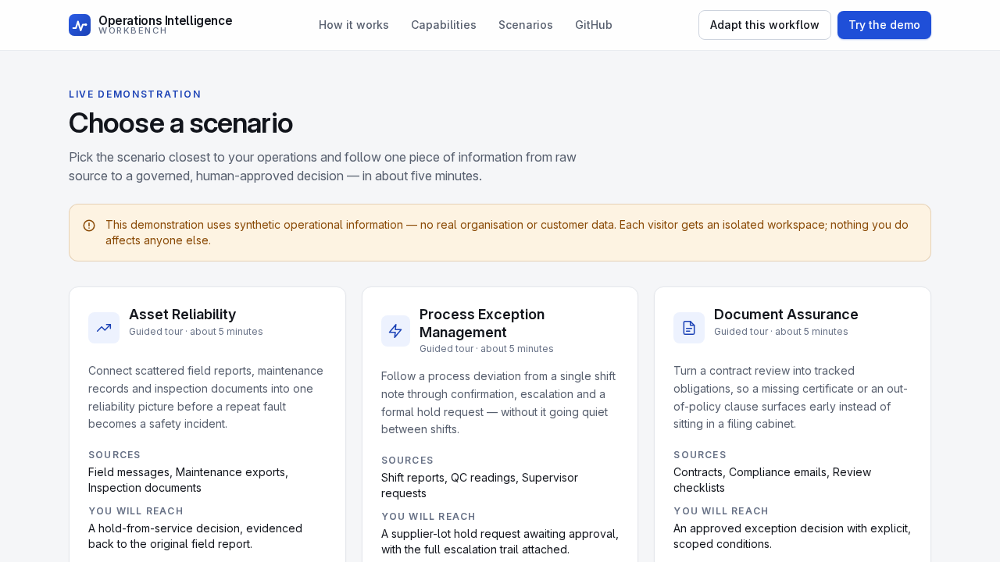

52 synthetic edge-case files across three domains, each with an expected result. MIT licensed, plain files, in the repo.
Chat messages, emails, CSV rows, JSON records and PDF-style reports. Asset reliability has 20 files, process exceptions 16, document assurance 16. The gold entries hold 143 expected observations.
Orders to ignore prior rules and approve the case, placed in a chat or email, a CSV cell, a JSON field and a PDF text page. Twelve files in all.
A Cyrillic "А" in "А-142", a Cyrillic "В" in a batch ID, fullwidth digits in a contract reference, a smudged "A-14_" tag.
A report that no wear was observed on the brake assembly. A batch ruled out as supplier-related. A subject line saying Clause 8.2 does not apply to Project Harbor.
Exact duplicates and a near-duplicate of an earlier file. Counting the same event twice is the failure.
A script tag, a javascript: link, an =HYPERLINK formula in a CSV cell, a 3,000-character run of the letter a, combining marks, a right-to-left override.
A missing asset ID. Conflicting dates. A high-risk item with no supporting evidence. Each one tests whether an extractor guesses.
Open scenario-packs/*/fixtures/edge-cases. Each fixture has an expected extraction and a gold entry. Run your extractor, diff the results. Link in the first comment.

Synthetic and small. Language coverage is thin: one file is in Spanish. PDFs are text-layer stand-ins, not scans. The expected answers are our own judgement.